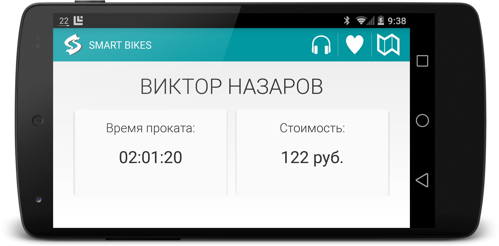

Создать качественный и удобный сервис проката велосипедов, чтобы каждый желающий мог покататься солнечным днем по красивым местам города и получить море положительных эмоций.

Создать качественный и удобный сервис проката велосипедов, чтобы каждый желающий мог покататься солнечным днем по красивым местам города и получить море положительных эмоций.
Мы омичи, поэтому наша текущая цель — запустить прокат в Омске. На данный момент мы планируем осуществить запуск сервиса летом 2015 года. Приглашаем всех желающих принять участие в бета-тестировании Smart Bikes!
Мы планируем размещении станций проката на Иртышской Набережной, на Набережной Тухачевского, на Зеленом Острове и в Парке культуры и отдыха. Также мы открыты к вашим пожеланиям и предложениям по данному вопросу.
Мы планируем, что одна минута проката будет стоить 1 рубль, то есть 2 часа проката вам обойдется в 120 рублей.
Да, после запуска проката эту информацию всегда можно будет узнать на нашем сайте.
Да!
В нашем прокате вы сможете найти современные вело-бренды, такие как GT, Track, Merida и другие. Также специальные детские и женские модели. Комфорт наших пользователей для нас важнее всего!
Для этого нужно внести залог равный стоимости велосипеда (который будет возвращен по завершению проката)
Да, вы можете вернуть велосипед на любой из станций Smart Bikes.
Напишите нам на адрес team@smart-bikes.ru, мы будем рады ответить на ваш вопрос или обсудить возможность сотрудничества.